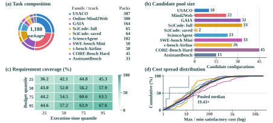
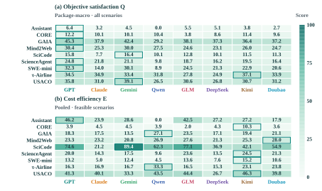
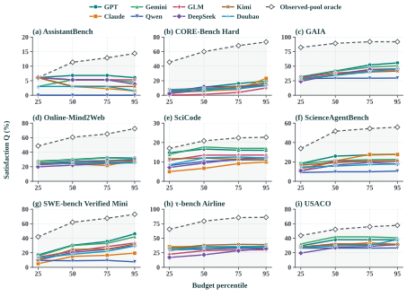
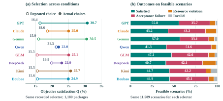

Condition-specific selection
All eight selectors improve Q by 0.71–14.60 percentage points with scenario-specific choices compared with reusing their own unconstrained choice. Both are scored on the same constrained scenarios.
Loading task examples…
Language-model applications have expanded from generating responses to executing tasks through tools and agent harnesses. This broadens selection from choosing a model to choosing an execution configuration whose suitability depends on the required outcome and execution conditions. We introduce a benchmark for agent selection under heterogeneous objectives, connecting these specifications to verifiable execution evidence. Recorded native acceptance results and resource measurements determine which candidates qualify and how economically they do so.
The benchmark organizes 1,116 source tasks from nine task families into 1,180 packages and 22,240 constrained scenarios, with historical evidence separated from target outcomes. It evaluates objective satisfaction and cost efficiency, and uses relations between qualifying candidate sets to assess adaptation across conditions. Across eight recorded selector systems, satisfaction and efficiency yield different rankings. Condition-specific choices improve satisfaction by 0.71–14.60 percentage points over reusing unconstrained choices, yet the best selector fully covers only nine of 114 target groups requiring candidate changes across feasible conditions. These results identify a gap between benefiting from execution conditions in aggregate and selecting appropriately throughout their variation, extending agent selection evaluation beyond an overall performance ranking.
The benchmark evaluates the choice of an executable model–harness configuration for a specified outcome, budget, and time limit. Each package brings together a task, candidate configurations, and historical evidence from other tasks. Native acceptance verdicts and recorded resource use establish which choices satisfy each objective.
A 4 × 4 budget–time grid creates 16 related conditions per acceptance target. This allows us to measure satisfaction and cost efficiency, then examine whether choices adapt when necessary and preserve success as constraints relax. Research question and formulation →
The collection spans nine task families and ten benchmark–track pairs. The figure summarizes the task packages, candidate pools, feasible objectives, and cost differences between satisfactory executions.

Eight recorded selector systems on the same 1,180 packages.
Results snapshot: 2026-11-10
The eight systems share candidate pools, objective specifications, and private target facts. Results retain their recorded evidence-access settings; all CORE packages use the revised pool and compact interface.
Aggregation. Overall Q is package-macro; E is pooled over feasible scenarios. Benchmarks are not equally weighted. Unconstrained baselines are excluded from Q.
Scope. 1,116 source tasks yield 1,180 packages. SciCode has full-task and saved-output views. The 1,390 main task–target groups each have 16 cost–time conditions; these are related scenarios, not independent source tasks.

Objective satisfaction across four historical budget percentiles. Each point averages the four time limits and the main targets within each package, then averages packages within the task family. Dashed curves show observed-pool Oracle coverage.

Reference sets tell us when changing candidates is necessary—and when a failure is avoidable.
All eight selectors improve Q by 0.71–14.60 percentage points with scenario-specific choices compared with reusing their own unconstrained choice. Both are scored on the same constrained scenarios.
The best selector covers every feasible condition in only nine groups where no single candidate can satisfy all conditions. Switching frequently does not establish correct adaptation.
Selectors lose satisfaction in up to 9.63% of comparisons where a previously satisfactory choice remains feasible after a constraint is relaxed. Their own successful choice under the tighter condition supplies a verified alternative.
Of 940 task–target groups with at least one feasible condition, 715 share a minimum-cost satisfactory candidate across all feasible conditions. Another 111 share a satisfactory candidate but no common minimum-cost choice. The remaining 114 require candidate changes to cover all feasible conditions. These reference-set relations distinguish stable good choices from missed adaptation.

For a fixed task and acceptance target, increasing only the budget or time limit cannot shrink the satisfactory set: Ftight ⊆ Floose. If a selector succeeds under the tighter condition and fails under the looser one, its earlier candidate is a witness that the failure was avoidable. Regression rates use tighter-condition successes as their denominator, across 33,360 adjacent relaxation comparisons per selector.
Every selector faces the same objectives and reference choices, with target executions held private.
All configurations, steps, and views of a source task remain in one fold. History comes from the other four folds within the same benchmark and track. Budget and time limits use historical percentiles 25, 50, 75, and 95, yielding a 4 × 4 condition grid for each acceptance target.
Given task context, an objective specification, candidate descriptions, and permitted history, it submits one candidate ID for each scenario. The eight selector systems make these decisions; the candidate execution agents are the model–harness configurations already evaluated in the native task environments.
The recorded suite uses file-access and compact direct-input interfaces. Compact inputs contain candidate outcome and resource summaries, plus up to two related cases retrieved with BM25 from public task text. Current-task outcomes and resources are excluded from selector-visible history.
For objective r = (g, B, D), the satisfactory set F contains candidates that pass native target g with cost ≤ B and duration ≤ D. Its minimum-cost subset O admits ties. These sets come from recorded execution facts, not a new LLM judge, and are shared across all selectors.
A task–target group retains its context, native target, candidate identities, and execution facts while cost and time limits vary. SciCode also supports full-task and saved-output targets from shared source tasks. These relations make adaptation and constraint-relaxation consistency directly testable.
Of 22,240 main scenarios per selector, 11,589 have at least one satisfactory candidate and 10,651 have none. All-fail scenarios remain in Q and its oracle with zero credit, and are excluded from E and H. The 1,454 unconstrained reference choices are retained separately and do not enter Q.
Reference-set intersections determine whether one candidate can remain satisfactory or minimum-cost across conditions. The unconstrained replay comparison and relaxation checks reuse recorded submissions and existing execution facts. They are analyses of realized choices, not additional independent trials or controlled prompt interventions.